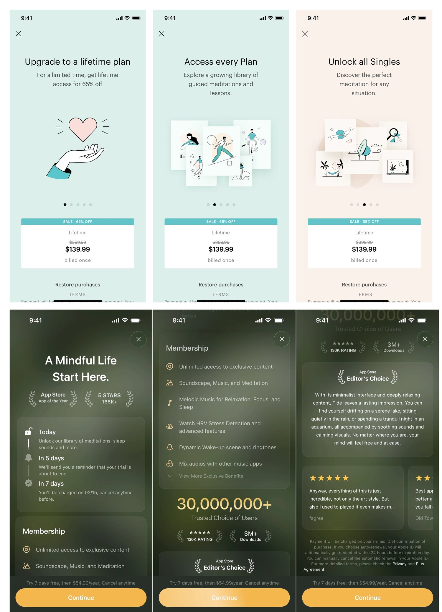

Proof Before Pitch
A study in honest persuasion — Headspace onboarding paywall, iOS. The wellness category has trained users to discount its claims. The way out is not better claims. It is making fewer of them, with more rigor.
The picked design at iPhone frame size, set against a quiet off-white backdrop. No decoration.
Two paywalls. Different tactics. Same mistake.

These two paywalls look like they're solving the same problem differently. They aren't. Meditopia leads with a discount; Tide leads with social proof. Different levers — but both lead with aspiration, and both treat their proof as decoration. Meditopia's proof is the price (worth $399, yours for $139). Tide's proof is the crowd (30 million people chose this). Neither asks the user to evaluate evidence; both ask them to defer to a signal.
The user, meanwhile, installed the app five minutes ago. The App Store is full of one-star reviews that all say a version of the same thing: I hadn't even tried it yet and they wanted my credit card.
This case study is about that gap — what happens when a meditation app stops performing proof and starts presenting it.
A hierarchy problem, not a pricing problem
The most consistent thread across App Store reviews and forum complaints isn't pricing. It's the feeling of being sold to before being shown anything. That gets framed as a pricing problem. I think it's a hierarchy problem. Aspiration leads. Proof decorates. The user is asked to trust the brand on faith.
Headspace has the rarest possible asset for solving it: a real evidence base — 73+ peer-reviewed studies, 100+ academic and medical collaborators. Most of that evidence does not appear on the paywall. What appears instead is the same aspirational copy every meditation app uses — different palette, same pitch.
The opportunity isn't to invent better persuasion. It's to use what's already true.
Naming the box
Brand voice intact
Headspace has a recognizable warmth — saturated color, friendly geometric illustration, custom Aperçu type. Keep the voice; change the order of what it says.
Same conversion outcome
Leadership has committed to a near-hard paywall. The redesign has to earn the same conversion through different means, not dilution.
Evidence integrity
Every cited study must be real, verifiable, peer-reviewed Headspace research. No invented numbers. No cherry-picking. This constraint is the case study's spine — break it and the whole thesis collapses.
Two archetypes
Archetype 1 — Discount Anchoring (Meditopia)
Meditopia paywall annotated — call out the persistent "SALE - 65% OFF" tag, the struck-through $399.99 anchor price, the carousel of aspirational headlines, and the price card pinned to the bottom of every screen. Annotations should label "the lever" (loss aversion via discount anchoring) and "the assumption" (user is price-sensitive and has evaluated alternatives).
A struck-through $399.99 above a "$139.99" lifetime price. A "SALE - 65% OFF" tag rides every screen of a four-screen carousel. The lever is loss aversion: the "real" price is $399, you're losing $260 if you wait. The assumption: the user is price-sensitive and has evaluated alternatives.
Why it underperforms: the user hasn't evaluated alternatives — they downloaded the app five minutes ago. The $399.99 anchor is unsupported. The proof here is the price, and the price is asserted, not earned.
Archetype 2 — Social Proof (Tide)
Tide paywall annotated — call out the "30,000,000+ Trusted Choice of Users" headline, the App Store Editor's Choice badge, the 130K ratings figure, the blurred testimonials, and the yellow "Continue" CTA. Annotations should label "the lever" (social validation) and "the assumption" (user is uncertain and looks for crowd signals).
Dark forest gradient. "30,000,000+ Trusted Choice of Users." App Store Editor's Choice badge. 130K ratings at five stars. Testimonials, slightly blurred to imply more behind them. The lever is social validation: 30 million people can't all be wrong.
Why it underperforms: the proof is real but generic. 30 million downloads tells the user nothing about whether meditation works, only that the app is popular. The testimonials are real-shaped but say nothing concrete. The proof is volumetric, not substantive — the user is being asked to trust a crowd, not an outcome.
What both archetypes share
Different palettes. Different levers. Same hierarchy:
Aspiration at the top. Pitch in the middle. Proof at the bottom, if at all.
The reframe
I went into this study thinking the meditation paywall was poorly persuasive. I came out convinced it was persuading the wrong thing first.
Meditation paywalls don't have a persuasion problem. They have a hierarchy problem. Aspiration leads. Pitch follows. Proof decorates. Reverse the order.
That single sentence reorganized every design decision that followed.
What "proof-first" means here
Proof-first does not mean proof-only. It means the first thing the user sees is verifiable evidence, and aspiration arrives after trust has been earned.
It also means respecting the limits of the evidence — acknowledging where the research is mixed. That acknowledgment is the most powerful trust signal available, because it's the one a normal advertising paywall cannot use.
The evidence base is real and publicly available. An RCT found Headspace reduced anxiety by 19% and depression by 29% after eight weeks. A UCSF employee study found 27% lower stress over the same period. A late-2025 JMIR study showed the CBT for Anxiety & Depression program produced significant symptom reductions in 21 days. And a 2022 systematic review found ~75% of Headspace studies showed improvement in depression but only ~40% showed improvement in stress — a finding that complicates the marketing claim and which a proof-first paywall would not hide.
The honest version of the proof story is more persuasive than the cherry-picked one. It just requires a brand confident enough to use it.
Three hypotheses, one picked
Lead with the headline number
Open with the strongest single statistic ("19% reduction in anxiety") in display type. Killed. The whole point of the thesis is that proof should not be performed. A 96-point number on a hero screen is performance.
Lead with the methodology
Open with how the research was conducted ("Eight weeks. RCT. Peer-reviewed in JMIR.") before any outcomes. Killed. Right instinct, wrong moment — cognitive load too high at first impression.
Lead with a verifiable specific
One concrete, attributable finding stated in plain language, source named in the same sentence. Methodology accessible by tap. Aspiration moves to a quiet footer. Picked.
The picked design
The picked design at iPhone frame size. Single-column composition. Quiet off-white background. Above the fold: a one-line statement of a real finding ("In an 8-week study with UCSF, employees using Headspace reported 27% lower stress.") with a small, tappable "View study" affordance below it. Plan toggle and CTA sit further down. Aspiration copy lives in the footer. Place against a soft neutral backdrop.
Single-screen, scrollable, quiet. Five things in deliberate order.
Above the fold — one finding, one source
A single sentence: "In an 8-week study with UCSF, employees using Headspace reported 27% lower stress." No display number. No badge. The institutional source — UCSF, not "researchers" — is named in the same sentence. A small View study link opens an in-app sheet with the methodology and paper. The proof is on the surface; interrogation is one tap away.
Just below — three more findings, evenly weighted
Three short statements in the same voice as the lead: "19% reduction in anxiety symptoms after 8 weeks" — peer-reviewed RCT. "Significant symptom reduction in 21 days" — JMIR, 2025. "73 peer-reviewed studies. 100+ academic and medical collaborators." Together they show the body of evidence rather than a single trophy.
A third of the way down — the honest paragraph
A short body-copy block in the same type as the rest of the page: "Not every study shows the same effect. A 2022 systematic review found about 75% of Headspace studies showed improvement in depression, while findings on stress were mixed. We're publishing this because we'd rather you know." This is the move the rest of the category cannot make. It converts the brand's biggest credibility risk into a credibility asset.
Below that — the offer
Plan toggle, annual default. No "65% off." No struck-through anchor. No urgency tag. The pricing speaks at normal volume because the rest of the page has done the convincing. The CTA reads Start a 7-day trial — neutral, factual, low-arousal.
At the footer — aspiration
One short sentence, demoted: "A small daily practice, with the research to support it." Aspiration lives at the end, as a coda to the evidence rather than a substitute for it.
Annotated callout strip alongside the picked design. Five callouts: (1) "Lead with one finding, one source." (2) "Three findings, evenly weighted — body of evidence, not trophy." (3) "Acknowledge nuance — the move competitors can't make." (4) "Offer at normal volume — no urgency engineering." (5) "Aspiration as coda, not headline."
Component anatomy
Four reusable components, documented for the team that would ship it.
Finding card
The claim, the duration, the source institution, and a View study affordance. Microcopy follows a fixed grammar: [Outcome] [Duration] [Source].
Honest paragraph
Body-copy block with a 60-word ceiling. It cannot expand into a defensive essay. The constraint protects the design's voice.
Offer block
Plan toggle, CTA, legal microcopy. Visually demoted from the findings above. Nothing in the offer block uses display type.
Aspiration coda
One line of footer copy, fixed maximum length. Structurally identical across content verticals (sleep, stress, anxiety, focus); only the wording changes.
Component anatomy diagram. The picked design rendered in wireframe with each of the four components labeled and their reusable structure shown alongside.
Microcopy
CTA candidates considered
Start free trial
Category default. Worn.
Get Headspace
Too transactional for a proof-first surface.
Begin a 7-day trial
Soft, low-arousal, but slightly precious.
Start a 7-day trial
Neutral, factual. Chosen. A proof-first surface earns the right to a quiet button.
Legal disclosure lives in body weight, not micro-print: "Free for 7 days, then $69.99 per year. Cancel anytime in Settings." Most disclosures say "Cancel anytime" without telling the user where. Naming the location is a trust signal that costs nothing. View study uses a hairline underline, not a button — a button would imply the action is required; a link implies it is welcome.
The contextual extension — anxiety
The same logic adapts to a high-intent moment: the contextual paywall that fires when a user taps a locked item in the Managing Anxiety program.
The anxiety contextual variant at iPhone frame size. Slightly more restrained palette than the onboarding paywall. Above the fold: the JMIR 2025 finding leading. The honest paragraph stays. The CTA is contextual: "Begin the program."
The variant inherits the proof-first hierarchy and swaps the headline finding for the most contextually relevant study — the December 2025 JMIR result on the CBT for Anxiety & Depression program. The lead becomes: "In a 2025 peer-reviewed study, this 21-day program produced significant reductions in anxiety symptoms." The honest paragraph stays. The aspiration coda is rewritten for the moment: "Three weeks. Five to ten minutes a day."
Anxiety is the right contextual variant because anxiety is where wellness marketing fails hardest — trust deficits run deepest at exactly this surface.
Validation plan
Speculative work — I can't claim a lift number. I can name what I'd test and what I'd measure.
Predicted directional outcomes
Trial-start rate
Roughly flat, possibly slightly lower. Some users will bounce when they don't get the dopamine of a "65% OFF" tag. Feature, not bug.
Trial-to-paid conversion
Lift. Users entering the trial after a proof-first surface arrive with calibrated expectations and baseline trust.
Refund rate & "I hadn't tried it yet" reviews
Meaningful drop. The proof-first surface is honest about what the user is committing to.
The metric that matters
Most paywall A/B tests optimize for trial-start rate. That's the wrong metric. The one I'd hold the team accountable to is month-3 retention, segmented by paywall variant — does the proof-first surface produce subscribers who stay? A paywall converting 8% into trials but 20% into 90-day subscribers is worse than one converting 7% into trials and 30% into 90-day subscribers — even though the first looks better on a weekly funnel report. Most product teams reward the wrong number. Naming the right one is the work.
Reflection
What surprised me
The honest version of the proof story is more persuasive than the cherry-picked one. I expected the case study to argue for more evidence. It ended up arguing for more honest evidence — including the parts that complicate the marketing claim.
What I'd build next
The brand-trust audit. A proof-first paywall is one surface; a proof-first brand is many. The same hierarchy inversion applies to landing pages, app store listings, marketing emails, push notifications: where does this surface lead with aspiration, and what would it look like to lead with evidence instead?
What I'd want a real product team to push back on
The honest paragraph. It's the most strategically valuable element of the design and the one a real legal and marketing team would resist hardest. The resistance is exactly the reason it works. A brand publishing a paragraph naming what its research doesn't show is doing something competitors structurally cannot copy. Rare is durable.
The case study's argument, in one line: the wellness category has trained users to discount its claims. The way out is not better claims. It is making fewer of them, with more rigor.